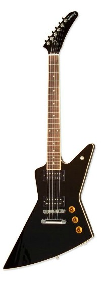
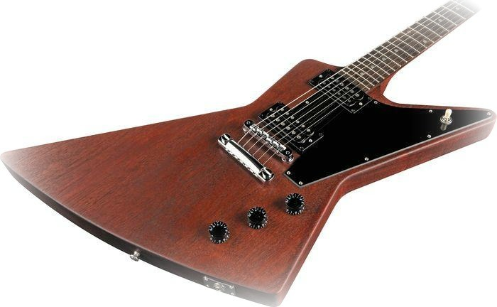
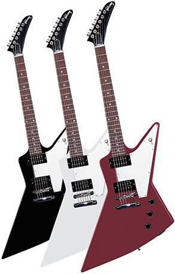

 

Gibson Explorer®
Sammy Hagar's scorching vocals and Gibson-fueled riffs have been the driving force for more than 60 million record sales, and the Red Rocker continues to explore new creative heights with his "supergroup" Chickenfoot, with drummer Chad Smith, bassist Michael Anthony and lead guitarist Joe Satriani. To stamp this star's inimitable style on a guitar that is just right for this heavy-rocking, hard-driving new project, Gibson USA introduces the Sammy Hagar Explorer. Crafted in the image of the original Explorer of 1958—a guitar that was blindingly ahead of its time back in the day—and graced with an original blend of Sammy's Red Rocker and Chickenfoot styling, the Sammy Hagar Explorer is an eye-catching axe from every angle, and equipped for everything from searing to sublime tonal adventures, too.